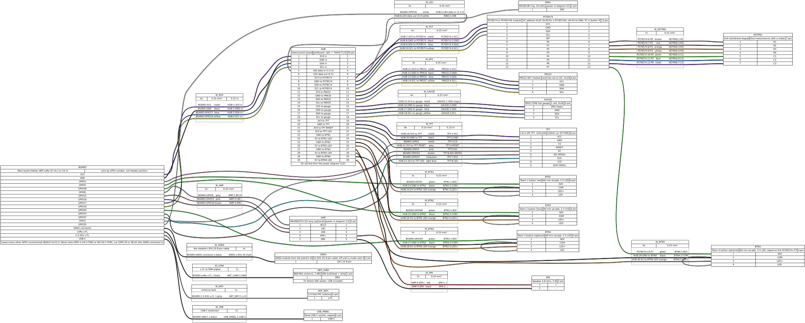
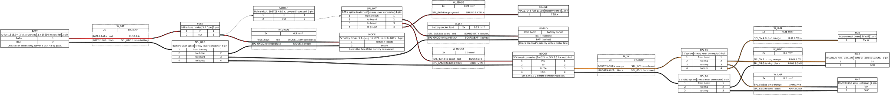

Guias de montagem
Os dispositivos da Atalaia montam-se com peças à venda em qualquer loja de eletrónica, à volta de uma placa ESP32, sem placa de circuito feita de propósito. Aqui estão os pinos e os esquemas de ligações da Field Box e os guias da caixa satélite, do módulo de E/S e do módulo de alvo, em resumo; os guias completos, com todas as verificações e as tabelas de problemas e soluções, estão no repositório (em inglês).
Ainda não se montou nenhuma caixa a partir destes guias. Os pinos são verificados automaticamente contra o firmware, mas todos os passos físicos (caixa, alimentação, autonomia, alcance do rádio) estão por testar, e as fotografias chegam com as primeiras montagens. Se montares uma, conta-nos o que encontraste.
Primeiro, a segurança
Estas regras valem para todas as montagens desta página, tal como para a Field Box.
- Nunca ligues uma placa sem a antena LoRa, nem sequer por USB: emitir com a saída da antena aberta pode destruir o amplificador do rádio. Monta as duas antenas primeiro e deixa-as sempre ligadas.
- Uma só célula de iões de lítio em série (1S, 3,0–4,2 V): células protegidas, um fusível perto da célula e um díodo contra uma célula ligada ao contrário. A entrada de bateria e o carregador da placa só aceitam uma célula; uma bateria 2S destrói-os. Confirma a polaridade com um multímetro antes de cada ligação: as fichas pequenas de bateria não têm uma polaridade padrão.
- Carrega sempre com alguém a vigiar, nunca dentro de uma mala fechada, só entre cerca de 0 e 45 °C, e guarda as células num saco à prova de fogo enquanto trabalhas, fora da caixa. Nunca uses uma célula amolgada, inchada, quente ou abaixo de 2,5 V.
- Só sinais de 3,3 V na placa: o anel de LED é comandado através de um conversor de nível, e cada módulo I2C tem de puxar as suas linhas para 3,3 V, nunca para 5 V.
- Nunca ligues nada ao GPIO 5 nem ao 46 (a entrada do rádio) nem aos GPIO 34 e 38–42 (o conector de GPS da placa).
- Nenhum jogo antes de medir a potência de emissão, como diz a lista de arranque: o firmware mantém o rádio dentro do limite legal com um ganho do amplificador que ainda não foi medido.
- Caixa de plástico, nunca de metal (o sinal de rádio tem de sair), estanque, de cor viva, com o rótulo «GAME PROP», e nada que se pareça com um engenho explosivo.
- Vai levar com BBs e bolas de paintball. Mantém as células e as placas longe das paredes e fora da linha de tiro, protege o ecrã de um telemóvel com policarbonato transparente (nunca vidro) e nunca ponhas uma caixa onde quem joga tenha de lhe disparar, a não ser que seja um alvo.
Field Box
O dispositivo principal, com botões de equipa, teclado, ecrã a cores, anel de LED, leitor NFC e altifalante. O manual de montagem (em inglês) tem as peças, os esquemas de ligações, a alimentação e a segurança das baterias, a primeira gravação do firmware e a resolução de problemas; os guias abaixo remetem para ele em todos os passos que partilham.
Pinos
Os valores por omissão do firmware. Qualquer pino da placa que não esteja nesta tabela fica sem ligação.
| O quê | GPIO |
|---|---|
| Botão de equipa 1 (a primeira equipa do jogo) | 4 |
| Botão de equipa 2 (a segunda equipa) | 48 |
| Botão de equipa 3, opcional (a linha de receção da UART0 da placa) | 44 |
| Botão de equipa 4 (no expansor do teclado) | PCF8574 P7 |
| Teclado, através do expansor PCF8574 (endereço 0x20) | PCF8574 P0–P6 |
| Dados do anel de LED, através do conversor de nível 74AHCT125 | 35 |
| MOSI do ecrã (SPI) | 33 |
| Relógio do ecrã (SCK) | 47 |
| Seleção do ecrã (CS; o pino de tensão da bateria da placa, usado como saída) | 1 |
| Dados/comando do ecrã (DC) | 3 |
| RESET e retroiluminação do ecrã: os dois ao pino 3V3, sem GPIO | 3V3 |
| I2C SDA, para o expansor do teclado, o leitor NFC e o medidor de bateria (o barramento da própria placa) | 17 |
| I2C SCL | 18 |
| BCLK do amplificador (opcional) | 6 |
| LRC do amplificador | 15 |
| DIN do amplificador | 16 |
Os GPIO 1, 35 e 44 são pinos da placa que a Field Box partilha de propósito, cada um para este único uso: o 1 é a entrada de tensão da bateria da placa (o medidor lê a bateria por I2C), o 35 o seu LED branco (que pisca de leve com o anel) e o 44 a linha de receção da UART0 (a consola USB não é afetada).
Esquemas de ligações
Dois esquemas, gerados a partir dos ficheiros WireViz do repositório: os sinais com a alimentação lógica de 3,3 V, e a bateria, o interruptor e a linha de 5 V. Os pinos da placa têm só o número do GPIO: procura cada um pelo número impresso junto ao pino do conector. Os nomes (pinos, fios, peças) ficam em inglês em todas as línguas, como no repositório; se o texto e um esquema discordarem, vale o esquema.




O esquema é muito largo: toca ou clica nele para o abrir em tamanho real, onde podes ampliar e deslocar. Também no tema escuro está sobre uma folha branca, para as cores dos fios continuarem verdadeiras.
Caixa satélite
Uma caixa pequena para um ponto secundário ou um farol: a placa da Field Box com dois botões de equipa grandes (pode ter um terceiro), um anel de LED que mostra a equipa que a tem, o pequeno ecrã da própria placa e uma célula 18650. Cerca de 30–40 € em peças (a estimativa do projeto). Corre o próprio firmware da Field Box com menos peças: o firmware avisa uma vez, ao arrancar, de cada peça que falta, e continua.
Sem teclado, não escolhe um jogo sozinha: joga os jogos para que um controlador de campo a convida, como satélite ou como mestre do Mestre e Satélites, ou como zona de qualquer modo que só precise de botões de equipa (Domínio, Domínio Total, Último Elemento). Entra num campo pelo cabo USB ou pelo código de emparelhamento que mostra no pequeno ecrã (não tem leitor NFC para o cartão de campo).
Peças
- Placa Heltec WiFi LoRa 32 V4, revisão V4.2 ou V4.3, 863–928 MHz, sem a caixa de plástico.
- Uma antena de 868 MHz com 2 dBi ou menos (a do kit da placa) e uma antena de 2,4 GHz, obrigatória: a primeira configuração, a descarga de modos e as atualizações de firmware usam o Wi-Fi.
- Dois (ou três) botões arcade de 60 mm com LED de 5 V.
- Um anel de LED WS2812B (24 LED por omissão; 12 ou 16 com uma definição do firmware), com o conversor de nível 74AHCT125, uma resistência de 330 Ω e um condensador de 1000 µF, numa pequena placa perfurada.
- Um medidor de bateria MAX17048, recomendado: sem ele, a caixa nunca sabe quanta bateria tem.
- Uma célula 18650 protegida num suporte (ou uma bateria 1S com placa de proteção), um fusível de 5 A, um díodo Schottky, um interruptor principal tapado, um conversor elevador de 5 V para o anel e ligadores de alavanca: a alimentação da Field Box com uma só célula.
- Som, se quiseres: o amplificador MAX98357A da Field Box e um altifalante pequeno.
- Uma caixa de plástico IP65 de cor viva, com respiro e bucins, e rótulos «GAME PROP».
Pinos
Os valores por omissão do firmware. Qualquer pino da placa que não esteja nesta tabela fica sem ligação.
| O quê | GPIO |
|---|---|
| Botão de equipa 1 (a primeira equipa do jogo) | 4 |
| Botão de equipa 2 (a segunda equipa) | 48 |
| Botão de equipa 3, opcional (a linha de receção da UART0 da placa) | 44 |
| Dados do anel de LED, através do conversor de nível 74AHCT125 | 35 |
| I2C SDA, para o medidor de bateria (o barramento da própria placa) | 17 |
| I2C SCL | 18 |
| BCLK do amplificador (opcional) | 6 |
| LRC do amplificador | 15 |
| DIN do amplificador | 16 |
O firmware continua a comandar os pinos do ecrã da Field Box (GPIO 1, 3, 33 e 47): deixa-os sem ligação.
A ligação da caixa satélite é um subconjunto da da Field Box: segue os esquemas de ligações da Field Box e deixa de fora as peças que esta montagem não tem (o ecrã a cores, o teclado e o leitor NFC). Um esquema próprio ainda não existe.
Passos
- Lê o chip ao lado do conector da antena LoRa da placa: KCT8103L é uma V4.3 (a do firmware por omissão), GC1109 uma V4.2. Monta e identifica as duas antenas antes de a placa receber corrente pela primeira vez.
- Planeia a caixa em papel e fura todos os buracos antes de entrar qualquer eletrónica: botões e anel na tampa, o interruptor embutido ou tapado, um respiro em baixo.
- Monta a alimentação sem a placa: célula, fusível, díodo, interruptor, ligadores; regula o conversor elevador para 5,0–5,2 V sozinho, antes de lhe ligares seja o que for.
- Monta a pequena placa de ligações: as linhas 3V3, GND e 5V (e SDA e SCL para o medidor) e o conversor de nível, como no manual da Field Box.
- Liga os botões (a GND quando premidos), o anel através do conversor de nível, o medidor e o amplificador opcional, pelos pinos acima.
- Verifica com o multímetro, sem a célula: nenhum curto-circuito entre linhas, cada botão só quando premido, a polaridade do cabo de bateria da placa.
- Compila e grava o firmware da Field Box como diz o manual, para a revisão da tua placa e o número de LED do teu anel.
- Faz os passos da lista de arranque que se aplicam a uma caixa satélite: arranque, botões, LED, bateria, e o rádio e a sua potência de emissão antes de qualquer jogo.
- Dá-lhe um nome, a região e o PIN de administração na página de configuração Wi-Fi, a partir de um telemóvel, adota-a no teu campo pelo cabo USB ou pelo código de emparelhamento, e convida-a para um jogo na consola da organização.
Ainda por decidir
- O besouro piezoelétrico do desenho original: o firmware só faz som através do amplificador, por isso um besouro precisaria de uma alteração ao firmware.
- A caixa: ainda não se escolheu nenhuma.
- A autonomia com uma célula: por medir.
- Um esquema de ligações próprio: para já, os esquemas da Field Box mostram todos os fios que uma caixa satélite tem.
O guia completo (em inglês): guia de montagem da caixa satélite.
Módulo de E/S
A caixa que empresta a um dispositivo Android o que falta a um telemóvel: botões de equipa grandes, teclado, anel de LED, som, leitor NFC, um interruptor que avisa quando a caixa é aberta, e um rádio LoRa. O telemóvel corre o modo de jogo; o módulo é as suas mãos e o seu rádio, por cabo USB ou Bluetooth. É o hardware da Field Box sem o ecrã a cores, com o firmware do módulo, que já foi testado num computador mas ainda não numa placa. Cerca de 35 € em peças (a estimativa do projeto).
Tirando a placa, todas as peças são opcionais: o módulo diz ao telemóvel o que tem, e o telemóvel só usa isso. O botão 1 é a primeira equipa do jogo, como numa Field Box. Uma caixa aberta chega à consola da organização como alerta de violação.
Peças
- As peças da Field Box, menos o ecrã: a placa, os botões (até quatro), o teclado e o seu expansor PCF8574, o anel de LED com o conversor de nível, o leitor NFC PN532, o amplificador e o altifalante, o medidor de bateria e a mesma alimentação de uma célula.
- As duas antenas: LoRa, e 2,4 GHz para o Bluetooth.
- Um microinterruptor que a tampa fechada mantém premido: o interruptor da caixa.
- Uma tomada USB-C de painel com linhas de dados (não só de carga) para o cabo do telemóvel, e um cabo USB-C OTG para o telemóvel.
- Só na bancada: um adaptador USB-série de 3,3 V para ler o registo do módulo.
Pinos
Os valores por omissão do firmware. Qualquer pino da placa que não esteja nesta tabela fica sem ligação.
| O quê | GPIO |
|---|---|
| Botão de equipa 1 (a primeira equipa do jogo) | 4 |
| Botão de equipa 2 (a segunda equipa) | 48 |
| Botão de equipa 3, opcional (a linha de receção da UART0 da placa) | 44 |
| Botão de equipa 4 (no expansor do teclado) | PCF8574 P7 |
| Dados do anel de LED, através do conversor de nível 74AHCT125 | 35 |
| I2C SDA, para o expansor do teclado, o leitor NFC e o medidor de bateria (o barramento da própria placa) | 17 |
| I2C SCL | 18 |
| BCLK do amplificador (opcional) | 6 |
| LRC do amplificador | 15 |
| DIN do amplificador | 16 |
| Interruptor da caixa, para GND | 47 |
| Saída do registo (UART0 TX): só para o RX de um adaptador USB-série de 3,3 V, na bancada | 43 |
O módulo não usa os outros pinos do ecrã da Field Box (GPIO 1, 3 e 33): deixa-os sem ligação.
A ligação do módulo é a da Field Box sem o ecrã: segue os esquemas de ligações da Field Box e deixa de fora o ecrã e os seus fios. Um esquema próprio ainda não existe.
Passos
- Monta-o como uma Field Box sem o ecrã: revisão da placa, antenas, caixa, alimentação, placa de ligações, e depois o teclado, o anel, o leitor NFC, os botões e o amplificador que puseres, cada um com as verificações do manual.
- Fixa o microinterruptor de forma a que a tampa fechada o prima, e liga-o entre o GPIO 47 e GND. O módulo só o vigia depois de o ler fechado uma vez, por isso um módulo sem interruptor nunca dá alarme.
- Compila o firmware do módulo (
python tools/docker_fw.py pod) e grava-o a partir da pastabuild-pod, como o da Field Box. - Lê o registo no GPIO 43 com o adaptador USB-série: a porta USB-C leva a ligação do módulo ao telemóvel, não o registo.
- Na app, liga-o por um cabo USB-C OTG e depois por Bluetooth (o Android pede o emparelhamento uma vez).
- Faz as verificações de arranque do módulo, incluindo a potência de emissão do rádio antes de qualquer jogo.
Ainda por decidir
- Uma sirene ou um estroboscópio à parte: o som do módulo é o seu amplificador; comandar outras cargas não faz parte do firmware.
- A alimentação pelo telemóvel: por cabo, o telemóvel alimenta o módulo e pode carregar-lhe a célula. Se deve fazê-lo, e quanta corrente um telemóvel dá, fica para verificar na primeira montagem.
- A caixa, e a forma de levar o telemóvel e o módulo juntos.
- As definições a partir do telemóvel: as cores dos botões, o número de LED e o resto definem-se, por agora, ao compilar o firmware.
O guia completo (em inglês): guia de montagem do módulo de E/S, e as verificações do módulo com um telemóvel na lista de arranque.
Módulo de alvo
Ainda não se pode montar: o lado da caixa já está decidido, o módulo em si ainda não. Não ligues uma placa de alvo a uma caixa a partir desta página.
Uma placa onde se dispara, com um sensor que sente cada impacto. Liga-se a uma caixa e transforma-a num alvo que pontua, para as Janelas de Alvo, cujas regras já estão escritas e testadas no simulador; a janela aparece no anel de luz da própria caixa.
O que está decidido
- Uma placa de aço ou de policarbonato, um sensor piezoelétrico e um pequeno processador próprio (da classe RP2040 ou ATtiny) para detetar os impactos. Cerca de 20–30 € em peças (a estimativa do projeto).
- Liga-se a um conector M12 estanque de 5 pinos na caixa que só leva 3,3 V: os 3,3 V da placa, a massa e as duas linhas I2C; nada de 5 V, e o quinto pino fica livre. Cabos até 2 m. O seu processador diz à caixa o que é, por isso a caixa não precisa de um controlador novo para cada acessório.
- Pode tirar no máximo 25 mA da caixa, através de um fusível rearmável: chega para o processador e o sensor, não para luzes. As Janelas de Alvo acendem o anel de LED da própria caixa; um módulo com luzes próprias precisa da sua própria bateria.
- Sem linha de interrupção: a caixa lê o módulo por I2C a cada 20 ms, cerca de 3 % do barramento, e um impacto chega ao jogo em cerca de 21 ms no máximo. Nenhum pino da caixa muda. O firmware da caixa já tem esta leitura, testada, à espera do módulo.
- Os scripts dos modos recebem cada impacto com a sua força (de 0 a 255) e podem armar e desarmar o alvo. O mesmo está definido para o módulo de E/S de um telemóvel.
- As Janelas de Alvo acendem o alvo na cor de uma equipa ao acaso durante alguns segundos; um impacto forte o suficiente nessa janela pontua para essa equipa.
- Seguem-se o firmware do próprio módulo, a caixa a usar a leitura da porta e o sensor afinado em placas reais de aço e de policarbonato; depois, as Janelas de Alvo passam a ser um modo que a caixa oferece.
Ainda por decidir
- O processador (RP2040 ou ATtiny, dentro dos 25 mA) e o seu firmware.
- O endereço I2C do módulo e como diz o que é; a forma de comunicar um impacto tem um rascunho, que fica definitivo com o primeiro módulo.
- As verificações da primeira montagem: as resistências de pull-up do barramento com 2 m de cabo, o fusível, e a proteção do conector contra a eletricidade estática e a água.
- O circuito do sensor e a sua fixação, e a placa, o suporte e o ângulo.
A segurança, quando houver alguma coisa para montar
- Proteção de olhos e cara para toda a gente ao alcance enquanto alguém dispara contra ele, também na bancada.
- As BBs fazem ricochete numa placa dura, e algumas voltam para trás: inclina uma placa de aço para as mandar para o chão, nunca de frente para quem dispara.
- Só a placa é alvo: nunca dispares contra a caixa, o cabo ou o conector, e mantém a eletrónica atrás da placa ou numa caixa própria.
- Os limites de potência do campo valem para disparar contra alvos como contra quem joga.
O que está decidido, com os documentos por trás de cada decisão (em inglês): guia do módulo de alvo.